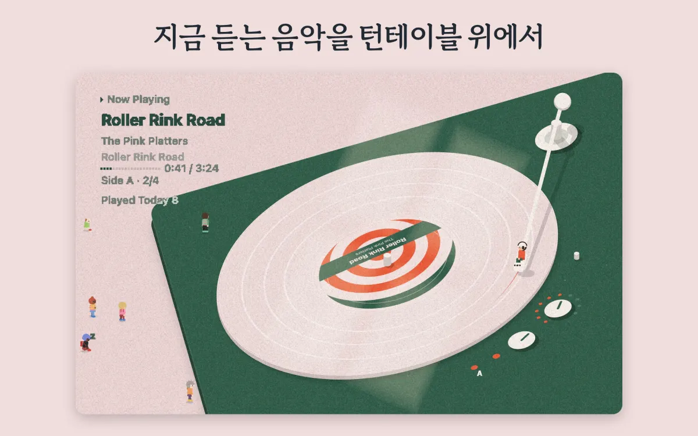
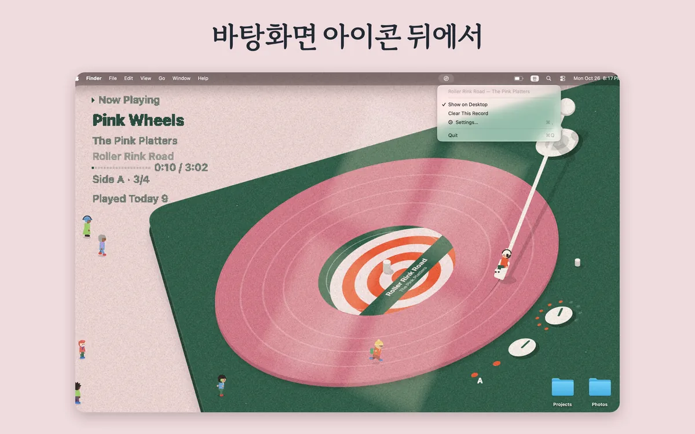
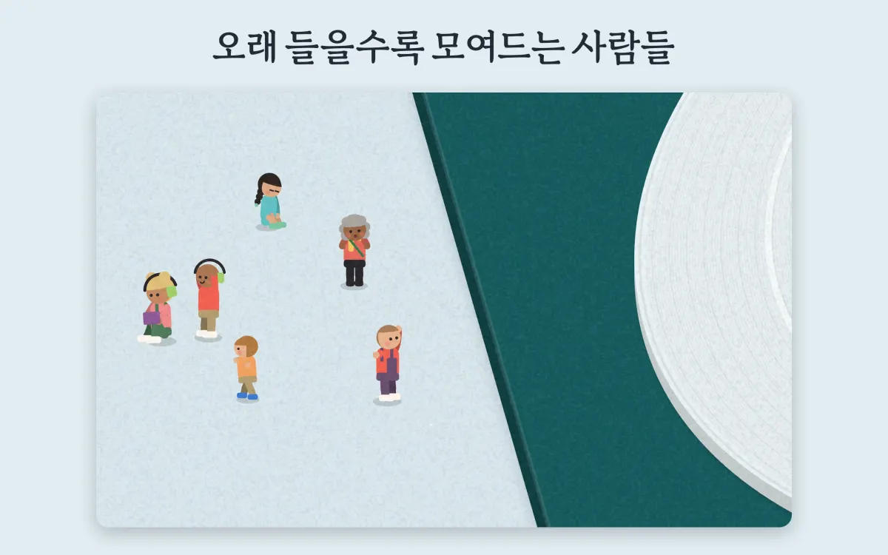
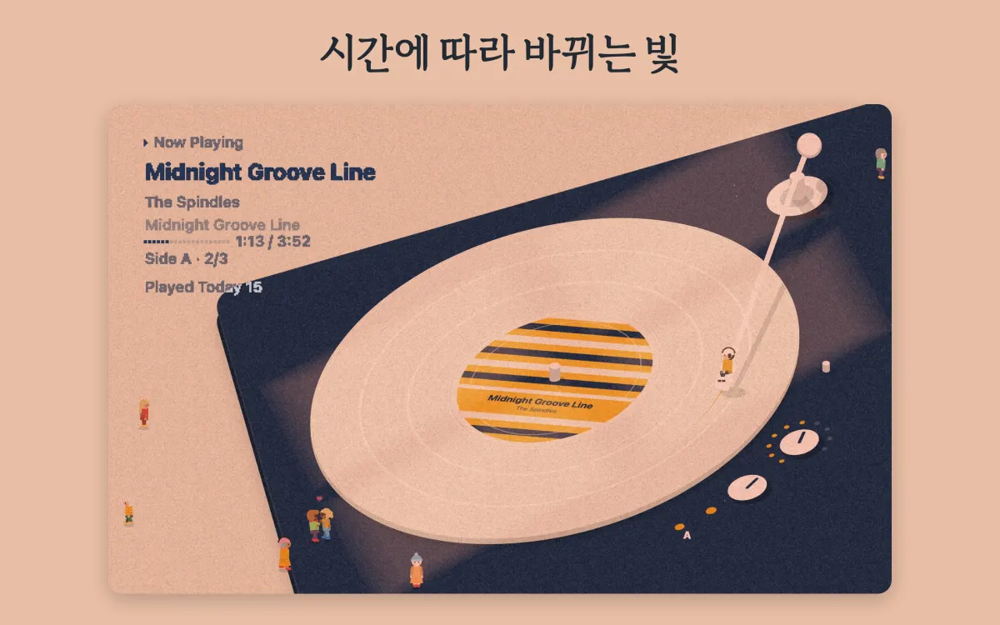
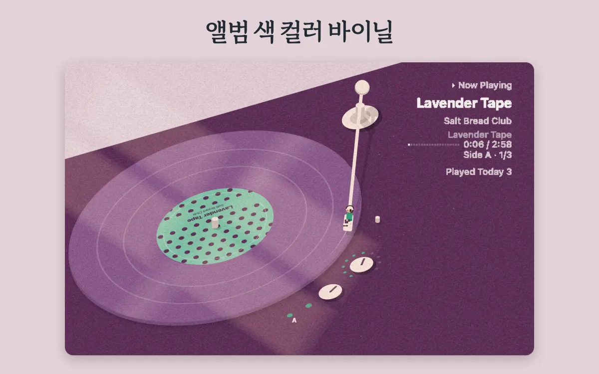
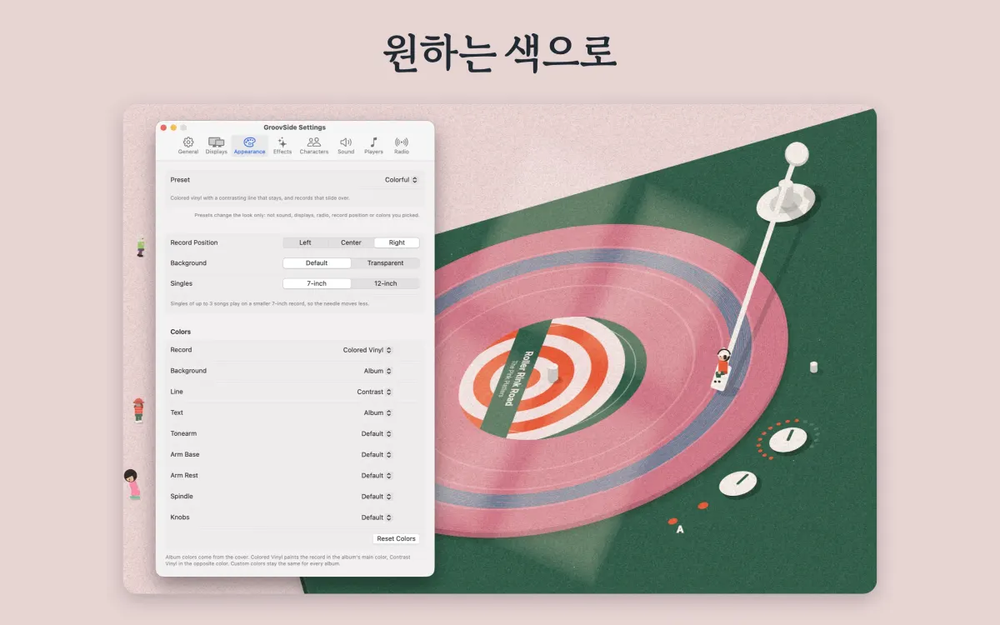
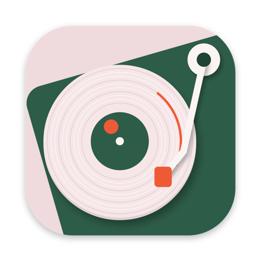

프레스 키트
GroovSide 자료 모음
GroovSide 기본 정보와 소개문, 스크린샷, 앱 아이콘, 짧은 영상을 모았습니다. GroovSide를 다루는 기사, 리뷰, 영상이라면 자유롭게 써도 됩니다.
ZIP 파일에는 앱 아이콘, 영어 스크린샷 6장, 영상, 영어 기본 정보가 들어 있습니다. 한국어 스크린샷은 아래에서 한 장씩 받으면 됩니다.
기본 정보
아직 출시 전이라 App Store 링크는 출시하면 여기에 올립니다.
- 이름
- GroovSide
- 개발자
- zinu kim(1인 개발자)
- 소재지
- 한국
- 플랫폼
- macOS 14 이상, Apple silicon 및 Intel
- 카테고리
- 음악
- 가격
- $4.99, 한 번 결제
- 출시
- Mac App Store, 출시 예정
- 언어
- 앱 화면은 영어, 스토어 정보는 영어와 한국어
- 함께 쓰는 앱
- Apple Music(macOS 기본 앱), Spotify
- 개인정보
- 계정, 분석, 추적 없음
- 웹사이트
- zinu.kim/groovside/ko · 설정 안내
- 보도 문의
- support@zinu.kim
소개문
길이에 맞는 것을 골라 쓰세요. 줄이거나 고쳐 써도 괜찮습니다.
한 줄 소개
GroovSide는 Apple Music이나 Spotify에서 듣는 곡을 바탕화면 아이콘 뒤 턴테이블에 레코드판으로 걸어 주는 Mac 메뉴 막대 앱입니다.
짧은 소개 약 150자
GroovSide를 켜고 Apple Music이나 Spotify에서 곡을 틀면, Mac 바탕화면 아이콘 뒤에서 레코드판이 돕니다. 앨범 커버는 라벨이 되고 톤암은 곡을 따라 안쪽으로 들어갑니다. 앨범은 실제 LP처럼 면이 나뉩니다. 오래 들을수록 작은 사람들이 모여듭니다.
긴 소개 약 500자
GroovSide는 Mac 바탕화면에 턴테이블을 한 대 놓아 줍니다. Apple Music이나 Spotify에서 곡을 틀면 아이콘 뒤에서 레코드판이 돌기 시작합니다. 앨범 커버가 라벨이 되고, 화면은 그 앨범 색으로 바뀝니다. 톤암은 곡을 따라 안쪽으로 들어가며 판 위에 선을 남깁니다. 앨범은 실제 LP처럼 면이 나뉩니다. 면이 끝나면 판을 뒤집거나 다음 판으로 갈아 끼웁니다. 싱글은 7인치 판에 올라가고, Apple Music 라디오 생방송은 방송국마다 판 한 장에 이어 틀 수 있습니다. 오래 듣고 있으면 작은 사람들이 모여 춤을 추거나 책을 읽고, 꾸벅꾸벅 졸기도 합니다. 창으로 드는 햇빛은 시간에 따라 바뀝니다. 겉모습과 움직임, 사람들은 프리셋 5가지 중 하나로 한 번에 정할 수 있습니다. 계정도, 분석도, 추적도 없습니다. 한국의 학생 1인 개발자 zinu kim이 만들었고, Mac App Store에서 $4.99 한 번 결제로 출시할 예정입니다.
영어 소개문은 영어 프레스 키트에 있습니다.
주요 기능
- 01앨범마다 다른 판커버가 라벨이 되고 화면은 앨범 색으로 바뀝니다. 톤암이 지나간 자리에는 선이 남습니다.
- 02실제 LP처럼 나뉘는 면한 면에 최대 6곡. 면이 끝나면 판을 뒤집거나 갈아 끼웁니다. 싱글은 7인치 판에 올라갑니다.
- 03DJ처럼 되감기Apple Music에서 빨리 감거나 되감으면 판도 따라 돕니다.
- 04음량 따라 도는 노브Mac 음량을 바꾸면 노브도 같이 돕니다. 램프에는 지금 도는 면이 켜집니다.
- 05모여드는 사람들많게는 여섯 명까지 모여 춤추고 책 읽고 졸다가, 가끔은 판 위를 달립니다. 음악을 멈추면 한 명씩 돌아갑니다.
- 06시간에 따라 바뀌는 빛창으로 들어온 햇빛이 Mac 시계를 따라 책상 위를 지나갑니다.
- 07프리셋 5가지Classic, Colorful, Lively, Calm, Minimal. 겉모습과 움직임, 사람들을 한 번에 바꿉니다.
- 08원하는 색앨범 색 그대로의 컬러 바이닐. 판·배경·선·글자·톤암 색은 직접 고를 수도 있습니다.
- 09방송국마다 판 한 장Apple Music 라디오 생방송은 방송국 하나를 판 한 장에 이어 틉니다.
- 10레코드 소리바늘 내려앉는 소리, 모터 도는 소리, 지직거리는 잡음. 처음에는 꺼져 있습니다.
- 11작업 방해 없이Dock 아이콘 없이 메뉴 막대에만 있습니다. 바탕화면 아이콘도 클릭도 그대로입니다. 모니터마다 판이 돌고, 창에 가려지면 그리기를 멈춥니다. 배터리로 쓸 때는 30fps.
- 12계정 없음, 추적 없음지금 나오는 곡을 읽기만 합니다. 음악을 바꾸지 않고, Music이나 Spotify를 알아서 켜지도 않습니다.
설정은 탭별로 설정 안내에 정리해 두었습니다.
스크린샷
App Store 스크린샷 6장, 2880 × 1800 JPEG(문구 포함). 영어 스크린샷












화면의 앨범은 모두 앱에 들어 있는 가상의 미리보기 앨범입니다.
앱 아이콘
배경이 투명한 PNG.

- 1024 × 1024 PNG248KB
- 512 × 512 PNG121KB
- 256 × 256 PNG46KB


영상
레코드판이 돌고 작은 사람들이 오가는 8초 반복 영상. 소리 없음.
개발자 소개
GroovSide는 한국의 학생 1인 개발자 zinu kim이 만들었습니다.
일할 때 앨범을 처음부터 끝까지 틀어 두는 편인데, 거기에 판을 거는 기분을 더하고 싶어서 만들기 시작했습니다.
문의와 의견은 support@zinu.kim으로 보내 주세요. 개발자가 직접 읽고 답합니다.
자료 사용 안내
- 이 자료는 GroovSide를 다루는 기사, 리뷰, 영상에 사용할 수 있습니다.
- 스크린샷과 영상에는 앱에 들어 있는 가상의 미리보기 앨범만 나옵니다. 실제 앨범이나 가수는 나오지 않습니다.
- 앱 아이콘은 모양과 색을 바꾸지 않고 사용합니다.
- 출시 후 리뷰용 프로모션 코드가 필요하면 support@zinu.kim으로 요청해 주세요.
보도 문의
인터뷰, 질문, 출시 후 프로모션 코드 요청.